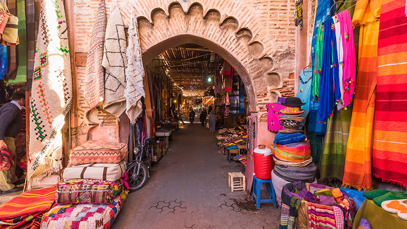

À découvrir
Activités touristiques
✦
Du kitesurf légendaire aux dunes infinies du Sahara, Dakhla regorge d'expériences inoubliables.
 Sport
Sport
Kitesurf
Spot mondial avec des vents constants et une lagune parfaite pour tous niveaux. Plus de 300 jours de vent par an.
 Nature
Nature
Excursion dans le Désert
Balade à dos de chameau et traversée des dunes dorées du Sahara au coucher du soleil.
 Culture
Culture
Culture Sahraouie
Immergez-vous dans les traditions nomades, la musique hassanie et l'artisanat sahraoui millénaire.
 Sport
Sport
Surf
Les meilleurs spots de surf de la côte atlantique avec des vagues parfaites pour débutants et confirmés.
 Sport
Sport
Pêche en Haute Mer
Partez à la pêche aux thons, dorades et autres poissons de l'Atlantique sud avec des guides locaux.

CultureArtisanat Local
Découvrez les tapis kilims, la poterie et les bijoux en argent et pierres semi-précieuses sahraouis.